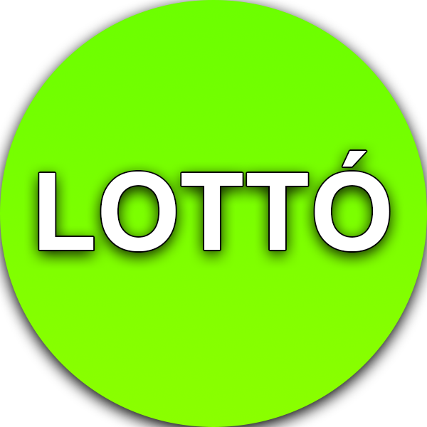
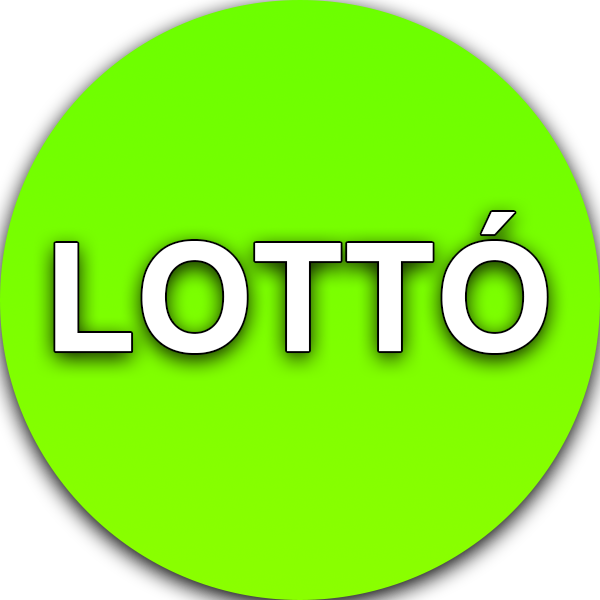

Sonia Davies, az 53 éves angol hölgy, 2016. augusztusában élt meg sorsfordító élményeket. Floridai utazása, nem nyaralás céljából zajlott, hanem egy mellékpajzsmirigy tumor
eltávolítása miatt utazott műtétre Amerikába. Amikor Mrs. Davies elhagyta a műtőasztalt, annyira megörült, hogy életben maradt és sikerrel járt a beavatkozás, hogy egy furcsa
kéréssel felhívta lányát Angliában. Azt kérte tőle, hogy a szerencsés fordulat és fuvallat kiaknázására, vásároljon EuroMillions szelvényeket a számára.
Sonia úgy érezte, hogy a halált nem véletlenül úszta meg, és ezt az eurolottó megjátszásával kívánta bizonyítani. Mint kiderült, a szerencse még mindig az ő oldalán állt.
A lánya Stephanie, természetesen nyomban lépett, és öt darab gépi számsort vásárolt a nemzetközi lottóra, az aznapi EuroMillions sorsolásra. Egy-egy úniós lottószelvényt vett
magának, barátjának, húgának, anyjának és mostohaapjának is. A családi lottócsoport végül, meg is nyerte a 67 milliós euro jackpot főnyereményt, és mindegyikőjük 13,5 millió EUR
lottónyereménnyel lett gazdagabb.
Bár ez a lottónyeremény, nem került fel az eddigi legnagyobb eurolotto jackpot rekordok toplistájára, mindenképp egy rászoruló családon segített és fordított a szekerük irányán.
A walesi Les Scadding, 2009-ben lett milliomos, amikor 50 millió euró nyeremény került hozzá. Az európai lottó nyereményből, végre szabadon
költekezhezhetett szíve szerint. Az egész életében focirajongó és drukker, a lottóvagyona egy részét a Newport County AFC klubjába fektette, majd 2012-2015 között igazgatta is
azt. Rövidesen azután, hogy átvette a csapatot, megverték a legerősebb helyi Wrexham csapatát, és sikerült a foci ligába is bejutniuk - 25 év után először! EuroMillions
sikere és a futball mese valóra váltása után, 2015-ben lemondott tisztségéről, és Barbadosra költözött a nyaralójába. Most is lottómilliomosként élvezi a
tengerparti homokot és napsütést...
A britt Susan Crossland, aki akkoriban vesztette el az apját, sétálgatás közben talált egy fehér madártollat - pontosabban a hölgy szerint, az
talált őrá. Ezt úgy vette, mint egy jelet az elhunyt apjától, aki még fentről is óvó szemekkel kíséri őt, és próbálja átsegíteni a nehéz időszakon. Két évvel később, Susan ismét
talált egy hajszál pontosan korábbival megegyező fehér madártollat, és mielőtt ténylegesen végiggondolta volna mit is csinál, megjátszotta az apja szerencseszámait.
A hihetetlen szerencsés egybeeséssel, vagy a fehér toll közbenjárásával, Susan 1.218.618 fontot nyert a UK Lotto jackpot megszerzésével. Az apja emlékét ápolandó, a lottó jackpot
összegéből Susan egy vidéki, hétszobás házba költözött családjával, és közösen meglátogatták az amerikai Disneylandet is - az apja is, míg élt, ezeket akarta nekik megadni.
 
